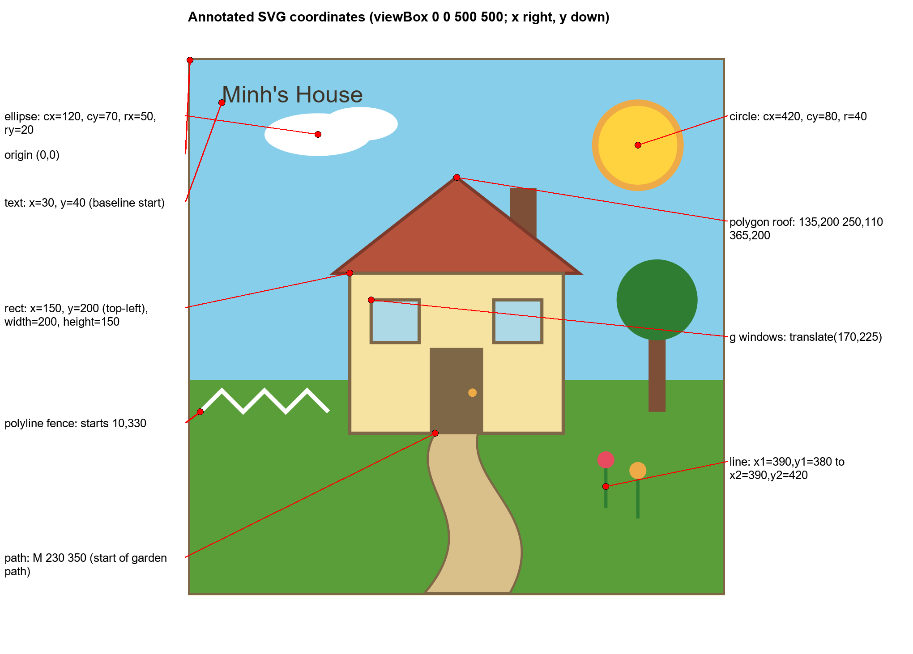
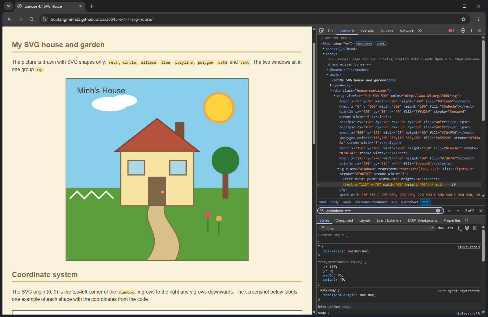

My SVG house and garden
The picture is drawn with SVG shapes only: rect, circle, ellipse, line, polyline, polygon, path and text. The two windows sit in one group <g>.
Coordinate system
The SVG origin (0, 0) is the top-left corner of the viewBox. x grows to the right and y grows downwards. The screenshot below labels one example of each shape with the coordinates from the code.

| Shape | Example in the picture | Attributes that set its position and size |
|---|---|---|
| rect | House wall | x="150" y="200" width="200" height="150" |
| circle | Sun | cx="420" cy="80" r="40" |
| ellipse | Cloud | cx="120" cy="70" rx="50" ry="20" |
| polygon | Roof | points="135,200 250,110 365,200" |
| polyline | Fence | points="10,330 30,310 50,330 ..." |
| line | Flower stem | x1="390" y1="380" x2="390" y2="420" |
| path | Garden path | d="M 230 350 C 200 400, 280 430, 220 500 L 300 500 ..." |
| text | Title | x="30" y="40" (the baseline start of the text) |
| g | Two windows | transform="translate(170, 225)" moves both windows together |
Group element
The two windows are inside <g class="windows" transform="translate(170, 225)">. The fill and stroke are set once on the group, so both windows are styled the same. Inside the group the windows use x="0" and x="115", and the translate moves the whole group to (170, 225) on the picture.
The DOM in developer tools
In the Elements panel the svg element sits inside div.house-container, and every shape is a child element of the svg. The two window rect elements are children of the g element.
